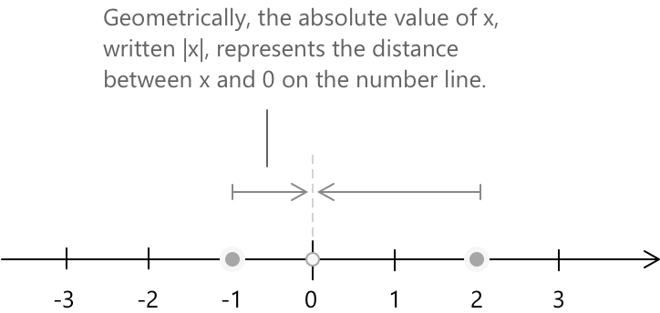
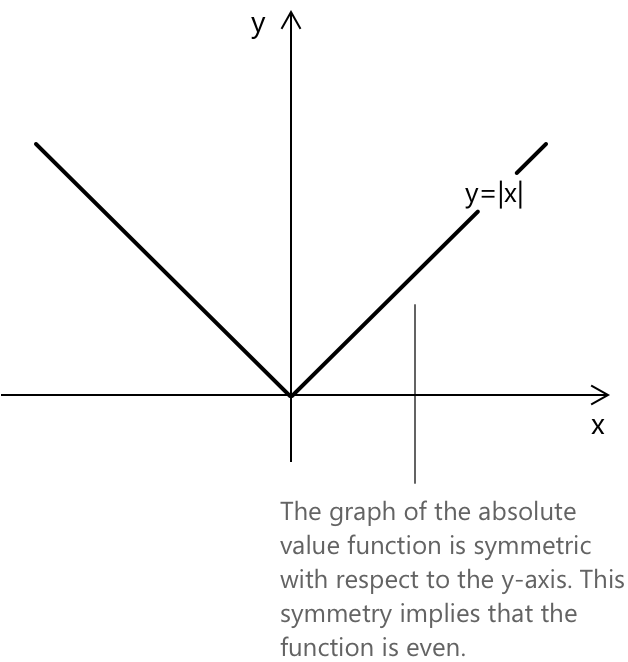

Модуль числа
Що таке абсолютне значення
Абсолютне значення числа представляє його відстань від нуля на числовій прямій, без урахування його знака. Воно вказує нам, на якій відстані число знаходиться від нуля, незалежно від того, чи є воно додатним, чи від'ємним, і завжди є невивідним значенням. Абсолютне значення записується за допомогою вертикальних рисок ось так, \(|x|\), і визначається наступним чином:
\[ |x| = \begin{cases} +x & \text{якщо } x \geq 0 \\[0.5em] -x & \text{якщо } x < 0 \end{cases} \quad \forall \; x \in \mathbb{R} \]
Наприклад, \(|5| = 5\), і \(|-6| = -(-6) = 6\). Це означає, що вираз \(f(x) := |x|\), при \(x \in \mathbb{R}\), визначає функцію \(f: \mathbb{R} \rightarrow \mathbb{R}\), область значень якої \(f(\mathbb{R}) = [0, +\infty)\).
Функція абсолютного значення кожному дійсному числу присвоює його відстань від нуля на числовій прямій. Це означає, що від'ємні числа відображаються у свої додатні відповідники, тоді як додатні числа залишаються незмінними, оскільки відстань завжди є невивідною.

Загалом, вираз абсолютного значення \(|x – a|\) можна інтерпретувати як відстань між точкою \(x\) та точкою \(a\) на числовій прямій. Маємо:
\[|x-a| = |a-x| \]
Наприклад, відстань між \(x = 3\) та \(a = 7\) дорівнює \(|3 – 7| = |-4| = 4\), що дорівнює \(|7 – 3| = |4| = 4\), що підтверджує симетричність відстані.
Абсолютне значення числа \( |x| \) також можна представити за допомогою функції знака \( \operatorname{sgn}(x) \), як:
\[ |x| = x \cdot \operatorname{sgn}(x) \]
Дійсно, функція знака визначається як:
\[ \operatorname{sgn}(x) = \begin{cases} -1 & \text{якщо } x < 0 \\[0.5em] 0 & \text{якщо } x = 0 \\[0.5em] 1 & \text{якщо } x > 0 \end{cases} \]
Множення \( x \) на \( \operatorname{sgn}(x) \) гарантує, що результат завжди буде невивідним, як того вимагає означення абсолютного значення. Зокрема:
- Якщо \( x > 0 \), то \( \operatorname{sgn}(x) = 1 \) і \( x \cdot \operatorname{sgn}(x) = x \).
- Якщо \( x < 0 \), то \( \operatorname{sgn}(x) = -1 \) і \( x \cdot \operatorname{sgn}(x) = -x \).
- Якщо \( x = 0 \), то \( \operatorname{sgn}(x) = 0 \) і \( x \cdot \operatorname{sgn}(x) = 0 \).
Властивості
Абсолютне значення числа дорівнює абсолютному значенню числа протилежного. Це випливає безпосередньо з означення: незалежно від того, починаємо ми з додатного чи від'ємного значення, відстань від початку координат однакова. Наприклад, \(|3| = |-3| = 3\). \[ |x| = |-x| \quad \forall \, x \in \mathbb{R} \]
Абсолютне значення добутку дорівнює добутку абсолютних значень. Ця властивість природно поширюється на будь-яку скінченну кількість множників: \(|x_1 \cdot x_2 \cdots x_n| = |x_1| \cdot |x_2| \cdots |x_n|\). Як особливий випадок, при \(x = y\) отримуємо \(|x^2| = |x|^2\), що узгоджується з тим фактом, що квадрати завжди є невивідними. \[ |x \cdot y| = |x| \cdot |y| \quad \forall \, x, y \in \mathbb{R} \]
Два дійсні числа мають рівні абсолютні значення тоді і тільки тоді, коли вони або рівні, або протилежні. Геометрично \(|x| = |y|\) означає, що \(x\) та \(y\) лежать на однаковій відстані від початку координат на дійсній прямій, що відбувається саме тоді, коли \(x = y\) або \(x = -y\). \[ |x| = |y| \iff x = \pm y \quad \forall \, x, y \in \mathbb{R} \]
Порівняння абсолютних значень еквівалентне порівнянню квадратів. Це справедливо, оскільки і \(|x|\), і \(|y|\) є невивідними, а для невивідних чисел функція піднесення до квадрата є строго зростаючою: \(a \leq b \iff a^2 \leq b^2\) завжди, коли \(a, b \geq 0\). Еквівалентність \(|x|^2 = x^2\) завершує доведення. \[ |x| \leq |y| \iff x^2 \leq y^2 \quad \forall \, x, y \in \mathbb{R} \]
Абсолютне значення частки дорівнює частці абсолютних значень, за умови, що знаменник не дорівнює нулю. Це є прямим наслідком мультиплікативної властивості: записавши \(x/y = x \cdot y^{-1}\) та застосувавши \(|x \cdot y^{-1}| = |x| \cdot |y^{-1}| = |x|/|y|\). \[ \left| \frac{x}{y} \right| = \frac{|x|}{|y|} \quad \forall \, x, y \in \mathbb{R},\ y \ne 0 \]
Головний квадратний корінь з \(x^2\) — це абсолютне значення \(x\), а не саме \(x\). Оскільки символ квадратного кореня позначає невивідний корінь, маємо \(\sqrt{x^2} = x\) тільки коли \(x \geq 0\), і \(\sqrt{x^2} = -x\), коли \(x < 0\). Запис \(\sqrt{x^2} = x\) без уточнень є поширеною помилкою, що є правильним лише для невивідних значень. \[ \sqrt{x^2} = |x| \quad \forall \, x \in \mathbb{R} \]
Перелічені тут властивості є основою для розв'язання рівнянь з абсолютним значенням та нерівностей з абсолютним значенням.
Нерівність трикутника
Нерівність трикутника представляє собою фундаментальну властивість модуля на дійсній прямій. Для будь-яких чисел \( a, b \in \mathbb{R}\) виконується наступна нерівність:
\[ |a + b| \le |a| + |b| \]
Нерівність стверджує, що відстань суми \( a + b \) від нуля не може перевищати суму окремих відстаней \( a \) та \( b \). Рівність досягається, коли обидва числа мають однаковий знак або коли принаймні одне з них дорівнює нулю. Коли їхні знаки відрізняються і обидва числа не є нулями, відбувається часткове скасування, що призводить до строгої нерівності.
Щоб довести нерівність, розглянемо всі можливі конфігурації знаків \( a \) та \( b \). Маємо:
\[ \begin{align} (1)\quad & a \ge 0 \quad b \ge 0 \\ (2)\quad & a \le 0 \quad b \le 0 \\ (3)\quad & a \ge 0 \quad b \le 0 \\ (4)\quad & a \le 0 \quad b \ge 0 \end{align} \]
У випадку \((1)\) маємо \(a+b \geq 0\): \[|a + b| = a + b = |a| + |b|\]
У випадку \((2)\) маємо \(a+b \leq 0\): \[|a + b| = -(a + b) = (-a) + (-b) = |a| + |b|\]
У випадку \((3)\), оскільки \( a \ge 0 \) і \( b \le 0 \), маємо \(|a| = a\) і \(|b| = -b\), і отже \(|a| + |b| = a - b\). Ми повинні показати, що \(|a + b| \le a – b \)
- Коли \( a + b \ge 0 \), маємо \(|a + b| = a + b \le a – b\), оскільки \( b \le 0 \).
- Коли \( a + b \le 0 \), отримаємо \(|a + b| = -(a + b) = -a – b \le a - b\), що еквівалентно \( -a \le a \), умова, яка виконується, оскільки \( a \ge 0 \).
У випадку \((4)\), де \( a \le 0 \) і \( b \ge 0 \), аргумент є симетричним до випадку \((3)\) і призводить до того самого висновку.
Корисним наслідком нерівності трикутника є обернена нерівність трикутника. Для будь-яких \( a, b \in \mathbb{R} \):
\[ \bigl||a| – |b|\bigr| \le |a – b| \]
Це говорить нам про те, що різниця між відстанями \( a \) та \( b \) від нуля не може перевищати відстань між самими \( a \) та \( b \). Щоб зрозуміти чому, застосуємо нерівність трикутника до пари \( a = (a – b) + b \):
\[ |a| = |(a – b) + b| \le |a - b| + |b| \]
звідси отримаємо \( |a| - |b| \le |a – b| \). За симетрією, перестановка \( a \) та \( b \) дає \( |b| – |a| \le |a - b| \). Оскільки і \( |a| - |b| \), і його від'ємне значення обмежені величиною \( |a - b| \), ми робимо висновок:
\[ \bigl||a| – |b|\bigr| \le |a – b| \]
Графік \(y= |x|\)
Графік функції модуля \( |x| \) симетричний відносно осі y. Ця симетрія означає, що функція є парною, тобто вона задовольняє тотожність:
\[|{-x}| = |x| \quad \text{для всіх } x \in \mathbb{R} \]

Використання модуля в рівняннях та нерівностях
Важливо розуміти, як модуль використовується в рівняннях та нерівностях. Розв'язання таких задач зазвичай передбачає розгляд різних випадків залежно від того, чи є вираз під знаком модуля додатним чи від'ємним. Цей крок є необхідним для перетворення відносин з модулем у стандартні алгебраїчні форми, які можна розв'язати простіше. Для глибшого розуміння цих застосувань зверніться до наступних записів:
- 1.4k Рівняння з модулем
- 966 Нерівності з модулем
- 1.1k Функція модуля
Інтерпретація нерівностей з абсолютним значенням
Нерівність, що містить абсолютне значення, виражає умову щодо відстані на числовій прямій. Запис \(|A|\) представляє відстань величини \(A\) від нуля, яка завжди є невід'ємною. Розглянемо спочатку нерівність:
\[ |A| < k \]
Вона говорить нам, що відстань між \(A\) та нулем менша за \(k\). Як зазначалося раніше, геометрично всі числа, що задовольняють цю нерівність, розташовані в відкритому інтервалі з центром у початку координат, що простягається на \(k\) одиниць ліворуч і на \(k\) одиниць праворуч. Алгебраїчно цю умову можна переписати як:
\[ -k < A < k \]
Якщо натомість нерівність має вигляд:
\[ |A| > k \]
значення повністю змінюється. У цьому випадку відстань \(A\) від нуля перевищує \(k\), тому допустимими значеннями \(A\) є ті, що лежать поза інтервалом \((−k, k)\). В алгебраїчних термінах нерівність набуває вигляду:
\[ A < -k \quad \text{або} \quad A > k \]
Перетворення такого роду є особливо корисними при розв'язанні нерівностей, що містять абсолютні значення. Переписуючи умову без символа абсолютного значення, задача перетворюється на одну або кілька стандартних нерівностей, які можна розв'язати за допомогою знайомих алгебраїчних методів, таких як аналіз інтервалів або методи інтервалів (знакові таблиці).
Абсолютне значення як норма
Абсолютне значення — це не просто зручний запис для видалення знаків. Це, точніше, норма на \(\mathbb{R}\), функція, яка кожному дійсному числу присвоює невід'ємну довжину, так само як норма у векторному просторі вимірює розмір вектора. Норма у дійсному векторному просторі \( V \) — це функція \( |\cdot| : V \to [0, +\infty) \), що задовольняє три умови для всіх \( x, y \in V \) та всіх \( \lambda \in \mathbb{R} \):
\[ |x| = 0 \iff x = 0 \] \[ |\lambda x| = |\lambda| \cdot |x| \] \[ |x + y| \le |x| + |y| \]
Абсолютне значення \( |\cdot| \) задовольняє всі три умови. Перша умова виконується за означенням, оскільки \( |x| = 0 \) тоді і тільки тоді, коли \( x = 0 \). Друга випливає безпосередньо з мультиплікативної властивості \( |x \cdot y| = |x| \cdot |y| \), застосованої при \( y = \lambda \). Третя є саме нерівністю трикутника, доведеною вище.
Це зауваження поміщає абсолютне значення в ширшу математичну структуру і пояснює, чому його властивості, зокрема нерівність трикутника, не є ізольованими фактами, а радше конкретними випадками загальних принципів, що повторюються в аналізі та лінійній алгебрі.